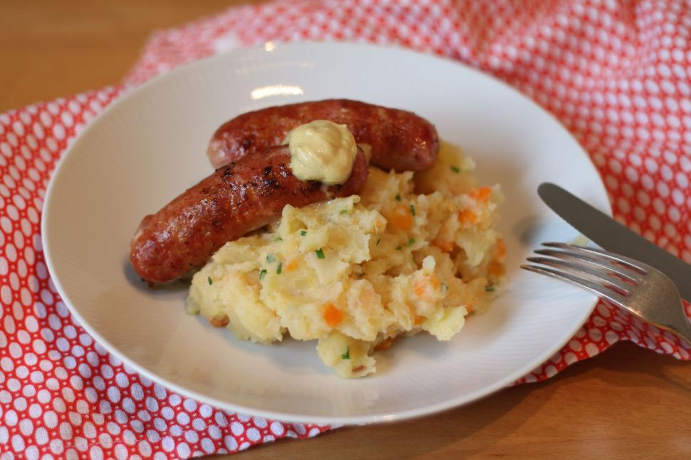

Bangers and Mash
Description
Bangers and mash is a traditional British dish served with sausages and mashed potatoes topped with onion gravy.
The term banger used to refer to sausages originated from food rationing during World War 1 when sausages
were produced with filler ingredients because of meat shortages. The high water content of sausages made them prone
to explode when heated. Bangers and mash remains a staple of British cuisine as a comfort food that can be enjoyed
at the pub or in the comfort of your own home.
Ingredients
- 8 large baking potatoes
- 2 teaspoons of butter
- 1/2 cup of milk
- Salt and pepper
- 1 1/2 pounds of beef sausages
- 1/2 cup of diced onions
- .75 ounce packet of dry brown gravy mix
Steps
-
Preheat the oven to 350 degrees of Farenheit (175 degrees Celsius). Peel and slice the potatoes into four equal
pieces.
-
Place potatoes in a saucepan and pour water into the saucepan. Boil the water and cook the potatoes for around
20 minutes.
-
Drain the water from the potatoes. Add 1 teaspoon of butter and 1/2 cup of milk. Mash the potatoes until the
potatoes are creamy. Season the potatoes with salt and pepper.
-
Heat a large skillet to medium before placing the sausages in the skillet. Cook the sausages and set them to
the side. Save the leftover sausage grease for later.
-
Add 1 teaspoon of butter to the skillet and fry the onions in leftover sausage grease. Mix the gravy mix and
the water and pour the gravy mix on the onions. Continuously stir the pan for the gravy to thicken.
-
Pour half of the gravy on the plate and place the sausages over the gravy. Pour the remaining gravy
over the sausages.
-
Baked the mashed potatoes in the preheated oven for 20 minutes. Place the mashed potatoes over the sausages
and the gravy mix.